Paladart is a social network that offters users the opportunity to meet and share exquisite food recipes
with people from all over the world. Users can search all kinds of food.Drinks or deserts through different categories and they can get close with great professionals of the culinary art,and learn about their big secrets in the kitchen
DUINO-ELECTRONIC BOOK
Today, technology is advancing at a great pace and so does the way in which we relate to the world. In one way or another, we become digital citizens and we spend much more time in front of an 'electronic device' that we adopt as an essential part of our lives, without asking how it works, what relationship it has with people, how they connect, why they do it, what makes up an electronic device, among other concerns.
-->
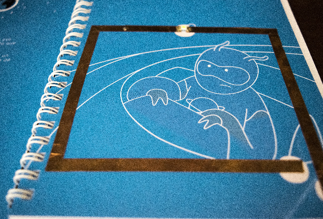
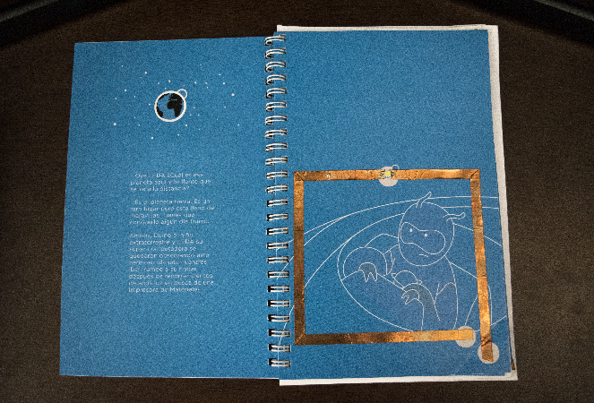
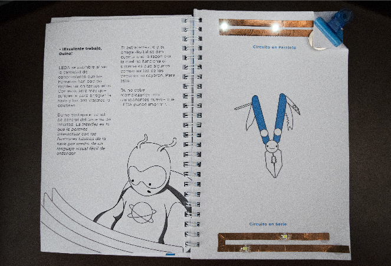
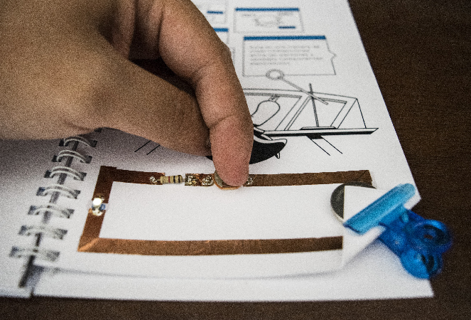
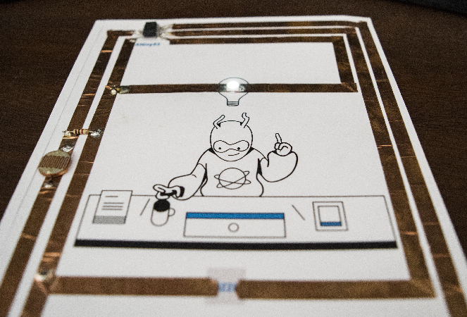
his project was carried out by the research center 418 of the Icesi University. My role in the project was to draw and create circuits on paper.
B-SKIN
This project was made for the class of intelligent environments.
The wearables in the stage language currently play a very important role, although it is not very experienced if it has become visible in many performative arts and has had many possibilities that shows that the rest of the parts of a choreography, performance etc also They can be designed to dance within these where everything plays an important role, including fashion and technology.
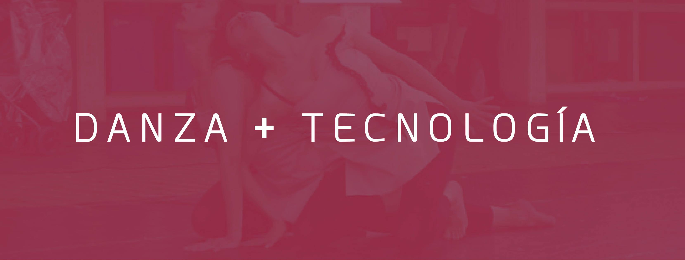
Dance, theater, as well as many of the performative arts, have always had an interdisciplinary or multimedia nature. In the case of dance, one can clearly see their marriage to music as well as other elements, be it the design of the space, clothing, lighting, etc.The incorporations that have been made in this field are many and very distinctive, from the use of video and new musical forms, to the creation of specific software. These new media have allowed the creation of new aesthetics, as well as the development of new forms of work within the choreographic language.
While it is true that movement is its primary constituent, these elements, such as costumes or lighting, are not as important or transcendental as the movement itself, and although movement is the primary constituent of dance, the rest of the parts They can also be designed to dance and conjugate a choreography where everything plays an important role. That's why my importance to cover the subject because the costumes for dance and any performative art is the least explored so far within the trinomial dance-fashion-technology .
LOTUS
Lotus was made in my class of parametric design and digital fabrication.
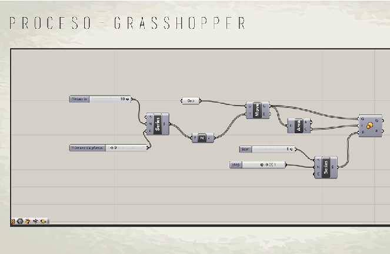
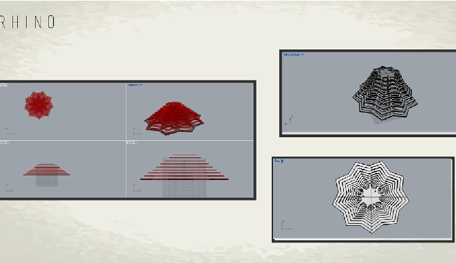
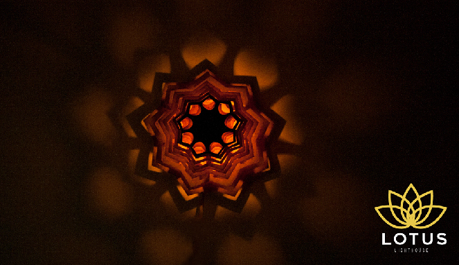
I used the technique of serial drawings and the rhino and grasshopper programs to make out a luminaire
 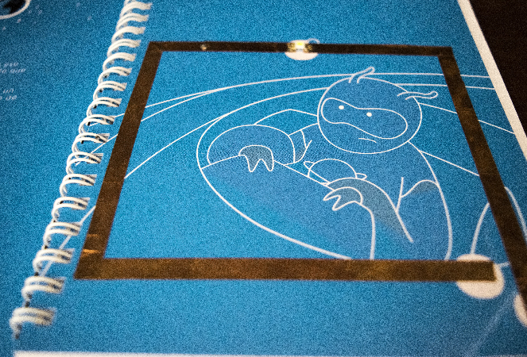
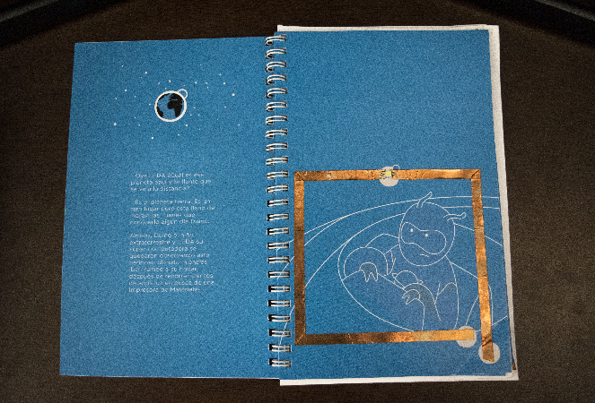
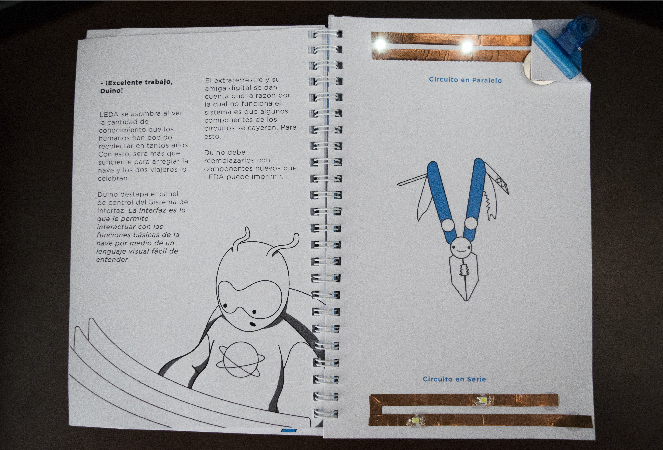
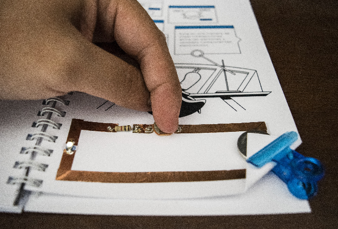
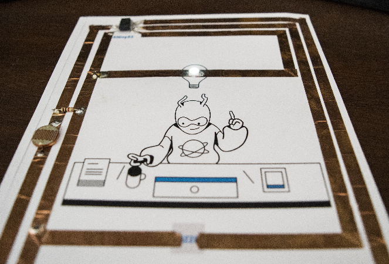
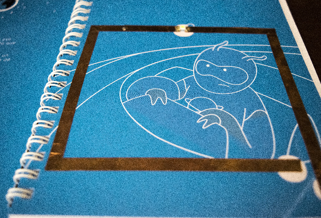
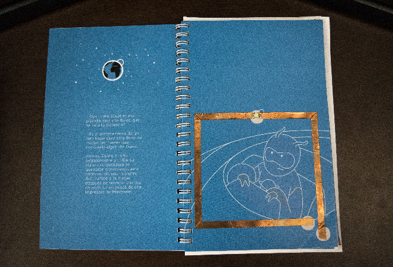
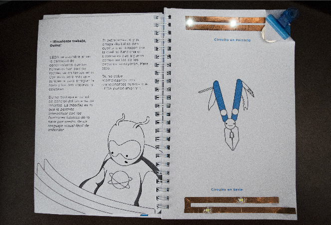
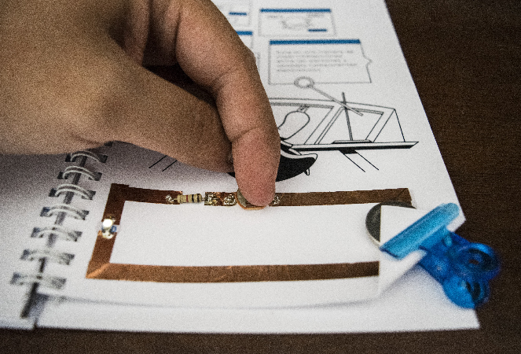
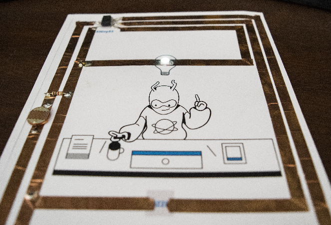